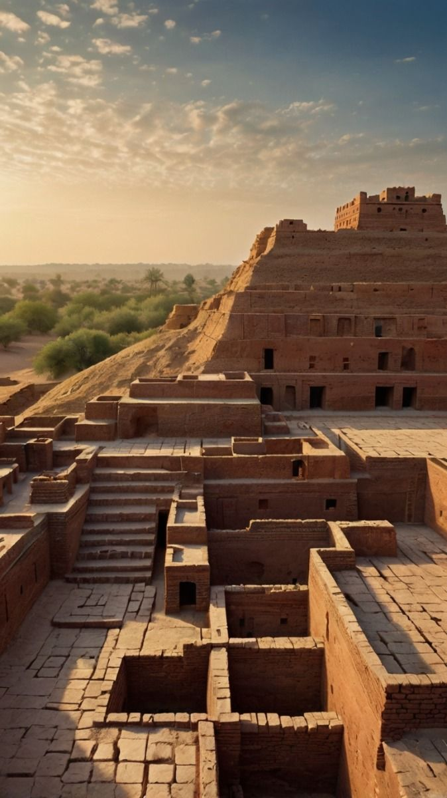
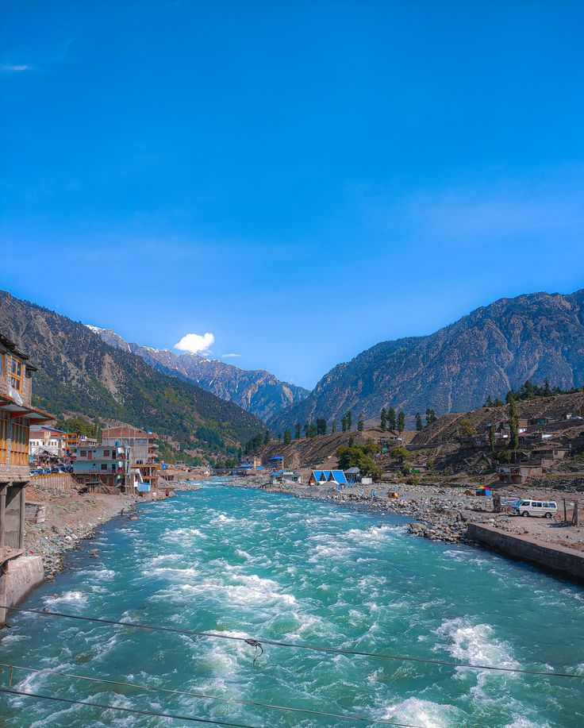

Most Popular Places
The most visited and searched places in Pakistan

Badshahi Mosque, Lahore

Faisal Mosque, Islamabad

Minar-e-Pakistan, Lahore

Mohenjo-daro, Sindh

Tomb of Quid-e-Azam, Karachi

Kalam, Khyber Pakhtunkhwa